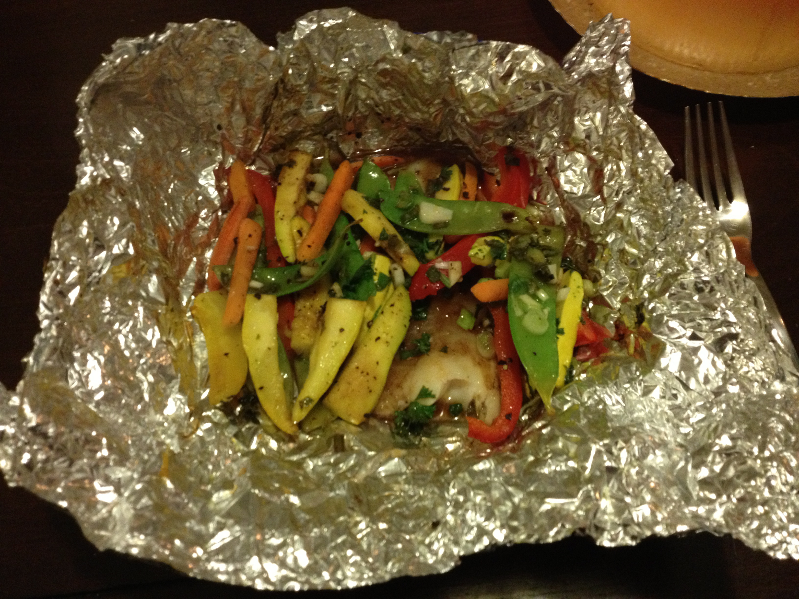

Step 6: Drizzle with the remaining olive oil, cover the dish with a lid or aluminum foil, and return the dish to the oven. Bake for about 25-30 minutes more, or until the fish flakes easily with a fork, and the vegetables seem tender. Be careful not to overcook, as the fish should remain moist.
